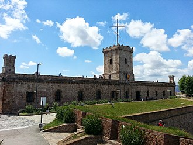

Poreklo najranijeg naselja na mestu današnje Barselone nije jasno. Pronađene su ruševine ranog naselja, uključujući različite grobnice i nastambe koje datiraju ranije od 5000. godine pre nove ere. Osnivanje Barselone je tema dve različite legende. Prvi pripisuje osnivanje grada mitološkom Herkulu. Druga legenda pripisuje osnivanje grada direktno istorijskom kartaginjanskom generalu, Hamilkaru Barki, Hanibalovom ocu, koji je grad navodno nazvao Barcino po svojoj porodici u 3. veku pre nove ere, ali ne postoje istorijski ili lingvistički dokazi da je to tačno.
Pod Rimljanima je to bila kolonija sa prezimenom Faventia, ili, u potpunosti, Colonia Faventia Julia Augusta Pia Barcino ili Colonia Julia Augusta Faventia Paterna Barcino. Pomponije Mela pominje ga među malim gradovima u okrugu, verovatno zato što ga je pomračio njegov sused Tarako, ali se od kasnijih pisaca može zaključiti da je postepeno rastao u bogatstvu i posledicama, pošto je bio favorizovan lepom situacijom i odličnom lukom. Uživao je imunitet od carskih tereta. Grad je kovao svoje novčiće.Važni rimski ostaci izloženi su u podzemlju Placa del Rei, kao deo Istorijskog muzeja grada Barselone; tipično rimski mrežasti plan je i danas vidljiv u rasporedu istorijskog centra,Gotička četvrt. Neki preostali fragmenti rimskih zidova ugrađeni su u katedralu. Katedrala, formalno poznata po dugom nazivu Catedral Basilica Metropolitana de Barcelona, takođe se ponekad naziva Le Seu , što jednostavno znači katedrala (i videti, između ostalog) na katalonskom. Kažu da je osnovana 343. godine.

Grad su osvojili Vizigoti početkom 5. veka, postavši na nekoliko godina prestonica cele Hispanije. Nakon što su ga osvojili Arapi početkom 8. veka, nakon opsade 801. godine osvojio ga je sin Karla Velikog Luj, koji je Barselonu učinio sedištem Karolinga, tampon zone kojom je vladao grof od Barselone.Grofovi Barselone su postajali sve nezavisniji i proširili svoju teritoriju kako bi uključili veći deo moderne Katalonije, iako je 6. jula 985. godine, Almanzorova vojska opljačkala Barselonu.Pljačka je bilo toliko brutalna da je većina stanovništva Barselone ili ubijena ili porobljena. Godine 1137., Aragon i okrug Barselona spojili su se u dinastičku zajednicu brakom Ramona Berengera IV i Petronile od Aragona, a njihove titule je konačno nosila samo jedna osoba kada je njihov sin Alfonso II od Aragona popeo na presto 1162. Njegove teritorije su bile kasnije poznata kao kruna Aragona, koja je osvojila mnoge prekomorske posede i vladala zapadnim Sredozemnim morem sa perifernim teritorijama u Napulju i Siciliji i sve do Atine u 13. veku.Barselona je bila vodeći centar za trgovinu robljem krune Aragona sve do 15. veka, kada ju je pretekla Valensija. U početku se hranila robovima sa istoka i Balkana, a kasnije je crpila iz Afrike. Banku Barselone, koja se često smatra najstarijom javnom bankom u Evropi, osnovali su gradski magistrati 1401. Nastao je iz državnih potreba, kao i Banka Venecije (1402) i Banka Đenove (1407).
Za povratak na početak stranice
Brak Ferdinanda II od Aragona i Izabele I od Kastilje 1469. ujedinio je dve kraljevske loze. Madrid je postao centar političke moći, dok je kolonizacija Amerike smanjila finansijski značaj mediteranske trgovine. Barselona je bila centar katalonskog separatizma, uključujući katalonsku pobunu (1640–52) protiv Filipa IV od Španije. Velika kuga 1650–1654 prepolovila je stanovništvo grada.Tvrđava na Montžuiku, najjužnija tačka sa koje su vršena merenja prilikom izračunavanja meridijanske definicije metraU 18. veku je izgrađena tvrđava na Montžuiku koja je gledala na luku. Godine 1794. ovu tvrđavu je koristio francuski astronom Pjer Fransoa Andre Mešen za posmatranja u vezi sa istraživanjem do Denkerka koje je predstavljalo zvaničnu osnovu za merenje metra.Konačna metarska šipka, proizvedena od platine, predstavljena je francuskoj zakonodavnoj skupštini 22. juna 1799. Veći deo Barselone bio je negativno pogođen Napoleonovim ratovima, ali je početak industrijalizacije video da se bogatstvo pokrajine poboljšalo.
